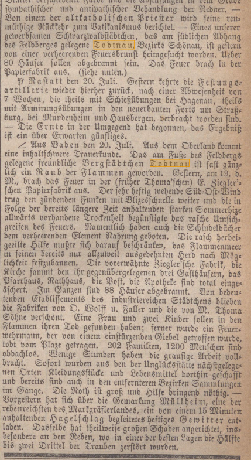

EXTRAIT ORIGINAL · EXAMEN CRITIQUE DES SOURCES
Ce que rapporte réellement le journal
Cet extrait de la Schwäbische Kronik, no 172 du 22 juillet 1876, témoigne des conséquences immédiates de l’incendie de Todtnau.
Schwäbische Kronik, no 172, 22 juillet 1876 · Archives de recherche HG-SBT-Z-0005. Cliquer pour agrandir.

Lieu : Todtnau ; date de l’incendie : 19 juillet 1876
- Départ du feu dans la papeterie Ziegler
- 88 maisons détruites par les flammes
- 202 familles et environ 1 200 personnes sans abri
- Mentions des secours apportés et des usines épargnées par le feu
- Comment interpréter cette source
L’heure de 19 h figurant dans la fiche d’archives ne peut pas être établie comme heure de départ du feu à partir de l’extrait présenté. Hanser situe le début de l’incendie vers midi.
Référence : Schwäbische Kronik, no 172, 22 juillet 1876, archives HG-SBT-Z-0005.
Droits de reproduction :
Avant toute utilisation publique de cette reproduction du journal, il convient de vérifier les conditions d’utilisation de la version numérisée. Remarques sur la critique des sources
Les fiches d’archives servent d’outils de recherche. En cas de divergence entre un résumé et le texte original, ce dernier fait foi. Le récit presque contemporain du pasteur Scherer sera comparé séparément à sa reproduction originale avant toute confrontation des horaires.
Autres affirmations à examiner
Documents et images Recherche historique indépendante · Dokumente und Bilder